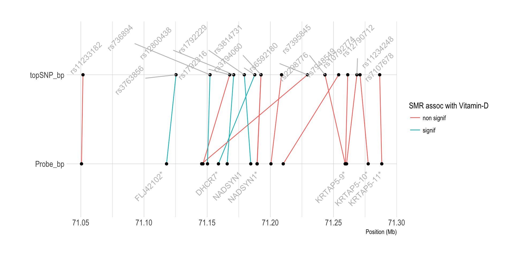

This document applies the SMR tools to methylation data.
1 - Method
I’m gonna use the methylation data located on Delta at /gpfs/gpfs01/polaris/Q0286/uqywu16/omics/methy
I run SMR on it, like I’ve done for eQTL data.
2 - DNA methylation data description
# load data
data <- read.table("0_DATA/smr_methyl_VitaminDXiaEtAl.smr", header=T)The data set is composed by 85334 SNP - gene methylation associations. These association are distributed along every chromosomes:
table(data$ProbeChr) %>%
as.data.frame() %>%
ggplot( aes(x=Var1, y=Freq)) +
geom_bar(stat="identity", fill="skyblue") +
xlab("chromosome") +
ylab("Number of SNP / gene methylation association") +
theme_ipsum()3 - Run SMR
The first step of SMR consists to run the algorythm on every significant mQTL (mQTL = significant relationship between a SNP allele and the methylation of a gene). For each gene involved in an mQTL, we are going to test its putative effect on our trait (vitaminD) thanks to the GWAS summary statistic of this trait.
# Good directory
cd /shares/compbio/Group-Wray/YanHoltz/VITAMIND_XIA_ET_AL/9_METHYLATION
# Run the analysis
tmp_command="smr_Linux --bfile /gpfs/gpfs01/polaris/Q0286/UKBiobank/v2EURu_HM3/ukbEURu_imp_chr{TASK_ID}_v2_HM3_QC --gwas-summary /shares/compbio/Group-Wray/YanHoltz/VITAMIND_XIA_ET_AL/1_GWAS/GWAS_vitaminD_XiaEtAL.ma --beqtl-summary /gpfs/gpfs01/polaris/Q0286/uqywu16/omics/methy/bl_meqtl_cis_std_chr{TASK_ID} --out smr_methyl_VitaminDXiaEtAl_{TASK_ID} --thread-num 1"
qsubshcom "$tmp_command" 1 30G smr_VitaminD 10:00:00 "-array=1-22"
# Concatenate chromosome results
cat smr_methyl_V*smr | head -1 > smr_methyl_VitaminDXiaEtAl.smr
cat smr_methyl_V*smr | grep -v "^probeID" >> smr_methyl_VitaminDXiaEtAl.smr
# Transfer locally
cd /Users/y.holtz/Dropbox/QBI/4_UK_BIOBANK_GWAS_PROJECT/VitaminD-GWAS/0_DATA
scp y.holtz@delta.imb.uq.edu.au:/shares/compbio/Group-Wray/YanHoltz/VITAMIND_XIA_ET_AL/9_METHYLATION/smr_methyl_VitaminDXiaEtAl.smr .4 - Result
Significant SMR results are found in 3 genetic regions. These 3 regions are also detected by the Vitamin D GWAS.
# Compute signif threshold
thres <- 0.05 / nrow(data)4.1 Chromo 4 (GC)
# Show significant association:
data %>%
filter(p_SMR < thres & topSNP_chr==4)
Can I make a diagram of these associations?
tmp <- data %>%
filter(ProbeChr==4) %>%
filter(Probe_bp>71000000 & Probe_bp<74000000) %>%
select(Gene, topSNP, p_SMR, Probe_bp, topSNP_bp) %>%
gather(key, position, -1, -2, -3) %>%
mutate(position=position/1000000)
tmp %>% ggplot( aes(y=position, x=key)) +
geom_line(aes(group=paste(Gene,topSNP), color=ifelse(p_SMR<thres,"signif","non signif"))) +
geom_point() +
geom_text(
data=subset(tmp, key=="Probe_bp") %>% select(Gene, key, position) %>% group_by(Gene) %>% summarize(key=unique(key), position=mean(position)),
aes( label=Gene) , angle=45, color="grey", hjust=1, nudge_x = -0.1
) +
geom_text(
data=subset(tmp, key=="topSNP_bp") %>% select(topSNP, key, position) %>% group_by(topSNP) %>% summarize(key=unique(key), position=mean(position)),
aes( x=key, label=topSNP) , angle=45, color="grey", hjust=0, nudge_x = 0.1
) +
coord_flip() +
theme_ipsum() +
xlab("") +
ylab("Position (Mb)") +
labs(color="SMR assoc with Vitamin-D")4.2 Chromo 11 ~ 14Mb (CYP2R1)
# Show significant association:
data %>%
filter(p_SMR < thres & topSNP_chr==11 & topSNP_bp<40000000) %>%
arrange(Probe_bp)
tmp <- data %>%
filter(ProbeChr==11) %>%
filter(Probe_bp>14000000 & Probe_bp<15500000) %>%
select(Gene, topSNP, p_SMR, Probe_bp, topSNP_bp) %>%
gather(key, position, -1, -2, -3) %>%
mutate(position=position/1000000)
tmp %>% ggplot( aes(y=position, x=key)) +
geom_line(aes(group=paste(Gene,topSNP), color=ifelse(p_SMR<thres,"signif","non signif"))) +
geom_point() +
geom_text(
data=subset(tmp, key=="Probe_bp") %>% select(Gene, key, position) %>% group_by(Gene) %>% summarize(key=unique(key), position=mean(position)),
aes( label=Gene) , angle=45, color="grey", hjust=1, nudge_x = -0.1
) +
geom_text(
data=subset(tmp, key=="topSNP_bp") %>% select(topSNP, key, position) %>% group_by(topSNP) %>% summarize(key=unique(key), position=mean(position)),
aes( x=key, label=topSNP) , angle=45, color="grey", hjust=0, nudge_x = 0.1
) +
coord_flip() +
theme_ipsum() +
xlab("") +
ylab("Position (Mb)") +
labs(color="SMR assoc with Vitamin-D")4.3 Chromo 11 ~ 71Mb (DHCR7)
# Show significant association:
data %>%
filter(p_SMR < thres & topSNP_chr==11 & topSNP_bp>40000000) %>%
arrange(Probe_bp)
tmp <- data %>%
filter(ProbeChr==11) %>%
filter(Probe_bp>71000000 & Probe_bp<72000000) %>%
select(Gene, topSNP, p_SMR, Probe_bp, topSNP_bp) %>%
gather(key, position, -1, -2, -3) %>%
mutate(position=position/1000000)
tmp %>% ggplot( aes(y=position, x=key)) +
geom_line(aes(group=paste(Gene,topSNP), color=ifelse(p_SMR<thres,"signif","non signif"))) +
geom_point() +
geom_text(
data=subset(tmp, key=="Probe_bp") %>% select(Gene, key, position) %>% group_by(Gene) %>% summarize(key=unique(key), position=mean(position)),
aes( label=Gene) , angle=45, color="grey", hjust=1, nudge_x = -0.1
) +
geom_text_repel(
data=subset(tmp, key=="topSNP_bp") %>% select(topSNP, key, position) %>% group_by(topSNP) %>% summarize(key=unique(key), position=mean(position)),
aes( x=key, label=topSNP) , angle=45, color="grey", hjust=0, nudge_x = 0.1
) +
coord_flip() +
theme_ipsum() +
xlab("") +
ylab("Position (Mb)") +
labs(color="SMR assoc with Vitamin-D")
A work by Yan Holtz
Yan.holtz.data@gmail.com